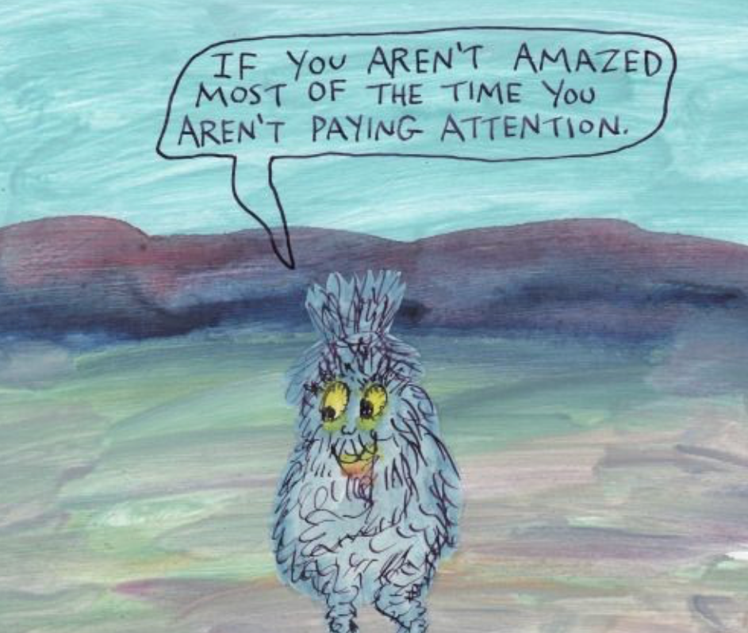

Sensitivity allows me to:
create artworks submerged with pure emotion, sympathize with the heartache of others, and appreciate the mundane beauties that omnipresently appear in life when searched for with mild diligence.
